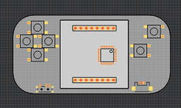

Brainstorming¶
Published on 2018-08-06 in PewPew Standalone.
It was a busy weekend, but I did some thinking about the best shape for this little device. If not for the constraints on price and preference to not use cables, I think I would like it to look like this:
Possibly with some kind of a case on the back, to hide the batteries. But of course that’s not possible with the constraints I have, and I have a very hard time placing the USB plug with the horizontal version.
I also found some 6x6cm matrices, so it would be possible to make the same thing, only twice as big. Of course they are quite a bit more expensive, and the PCB would be more expensive, but maybe it would be nice to have a bigger version for the teacher? I even started to design it (it was similar to the one above), but then realized that I should focus, and stopped. The matrix is ordered, though, so maybe later.